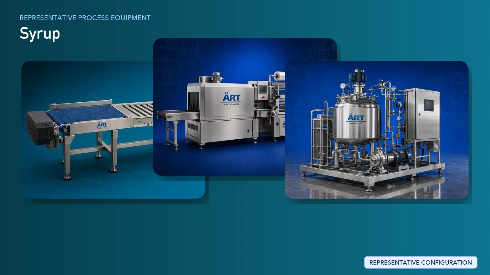

Syrup Manufacturing Plant & Machinery Solutions (Chocolate, Fruit & Flavored Syrup Production Lines)
Syrup manufacturing is a key segment in the global food and beverage industry, producing products such as chocolate syrup, fruit syrups, caramel syrup, dessert toppings, and beverage concentrates. These products are widely used in ice creams, desserts, milkshakes, bakery items, and beverages.

About Syrup Manufacturing Plant & Machinery Solutions processing
The process requires precise ingredient mixing, controlled heating, proper viscosity management, and hygienic packaging to ensure consistent taste, texture, and shelf stability.
ART Mechatronics provides complete turnkey solutions for syrup manufacturing plants, offering advanced systems for mixing, heating, homogenizing, filtration, and packaging. Our solutions are designed for high-quality production, consistent formulation, and efficient large-scale operations for FMCG and HoReCa markets.
Complete Syrup Process Flow
Ingredients such as sugar, water, cocoa, fruit concentrates, flavors, and additives are received and fed into the system.
Ensures accurate formulation.
- Homogeneous mixture
- Proper ingredient dispersion
Mixture is heated to dissolve sugar and develop texture.
Ensures:
- Proper consistency
- Microbial safety
- Uniform viscosity
- Stable product structure
Syrup is filtered to remove impurities.
Ensures clean and clear product.
Syrup is cooled before packaging.
Maintains product quality.
Processed syrup is stored in tanks.
Syrup is filled into bottles, jars, or squeeze packs.
Suitable for:
- Retail packaging
- Bulk supply
Machinery Required for Syrup Processing Plant
- Material Handling Systems
- Ingredient Dosing System
- Mixing Tank
- Jacketed Cooking Kettle
- Homogenizer
- Filtration System
- Cooling System
- Storage Tanks
- Liquid Filling & Packaging Machines
Turnkey Syrup Plant Solutions
ART Mechatronics offers complete turnkey solutions for syrup manufacturing plants, including:
- Process design & plant layout
- Mixing and cooking systems
- Homogenization and filtration systems
- Storage and packaging systems
- Automation & control panels
- Installation & commissioning
- After-sales support
We customize solutions based on:
- Product type (chocolate, fruit, flavored syrup)
- Production capacity
- Viscosity requirements
- Packaging format
Why Choose Art Mechatronics
- Expertise in liquid food processing systems
- Precision mixing and viscosity control
- Hygienic food-grade plant design
- Consistent product quality
- High-efficiency production systems
- Global export capability
Machinery in a Syrup Manufacturing Plant & Machinery Solutions plant
Where it's used
Get pricing & specs for the Syrup Manufacturing Plant & Machinery Solutions plant
Share the product, target capacity, current process and plant location. These details help our engineers discuss the right machine or line configuration.
One partner, from design to start-up
ART Mechatronics designs, manufactures, installs and commissions your Syrup Manufacturing Plant & Machinery Solutions solution with regional presence in India, UAE and Thailand.